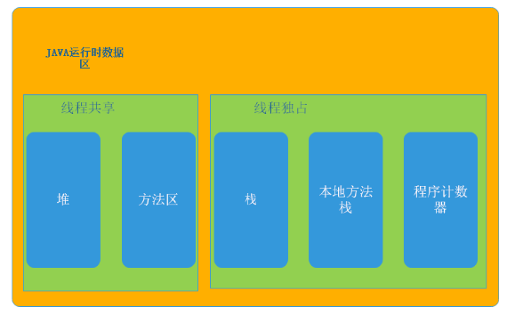

堆
用于存放对象实例
-Xms 初始化堆内存：-Xms2G -Xms20M
-Xmx 最大堆内存：-Xmx2G -Xmx20M
栈
描述java方法执行的内存模型
每个方法执行时会创建一个栈帧用于存放局部变量表、操作数栈、动态链接、方法出口等信息
64位数据类型
long和double占用2个局部变量表空间（Slot），其余数据类型占1个-Xss 栈内存大小：-Xss128K
方法区
存储已被虚拟机加载的类信息、常量、静态变量、即时编译器编译后的代码等数据
-XX:PermSize 初始化方法区大小：-XX:PermSize=10M
-XX:MaxPermSize 最大方法区大小：-XX:MaxPermSize =10M
本地方法栈
执行Native方法，即C或C++方法
程序计数器
记录程序执行的行号
说明：以上运行时数据区是基于JDK1.6的，在1.8后方法区被元数据区取代且从堆中存入本地内存